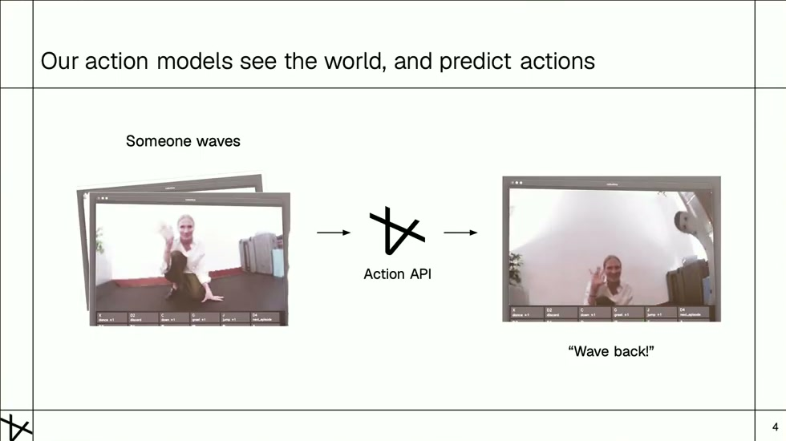
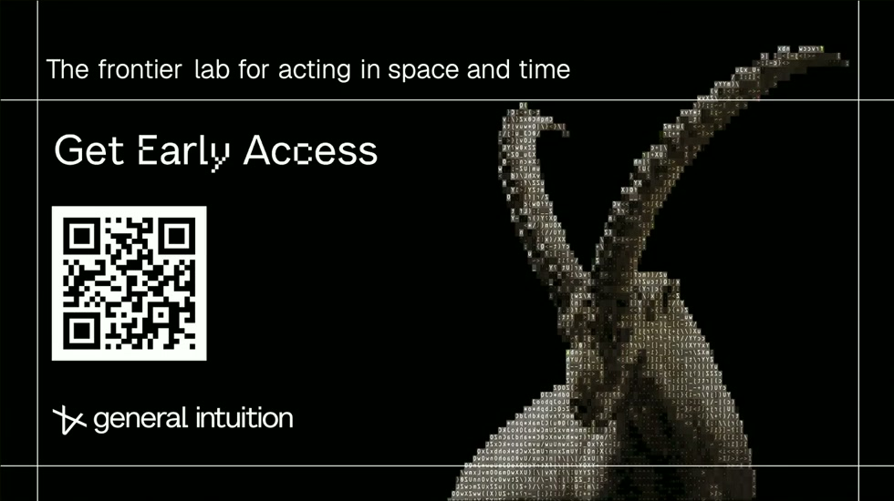

It started with recording video games
General Intuition grew out of Medal, which de Witte describes as the largest video game recorder in the world. People use it to record themselves playing tens of thousands of different games. He asks the audience to think of that the way they think of the internet: a very large body of human activity that a model can be trained on.
What makes the recordings useful is that each one ties the frames on screen to the inputs the player made. The actions are labelled, so the meaning of each action is known, not just the button.
The scale is the argument. Medal sees about a billion videos uploaded a year and is on track for three billion, which comes to more than a trillion and a half actions a month. His comparison: the total data frontier labs use today to train robotics models, Medal collects in half a day.
“We built the largest video game recorder in the world”00:00:09
- Medal records gameplay across tens of thousands of games.
- Each recording pairs what was on screen with what the player pressed.
- By his numbers it produces a robotics lab's whole dataset every half day.
Evidence: transcript 00:00:09, 00:07:19
The controller is already how people drive machines
The step from games to robots rests on one observation. A person can teleoperate a robot with the same brain they use to play a video game, and in many cases with the same controller. So the action space of games and the action space of real-world operation are often the same thing.
He says this is already how the industry works: robots below a certain number of degrees of freedom ship with a game controller, and most of the supply chain is set up that way.
The controller also hides the hard part. People do not know how to predict motor torque or what value to set on a machine; the controller does that translation for them. Most robotics companies, he says, try to solve the problem end to end, predicting exact poses or motor values. His company's approach is to use the device every robotics company has already built to make up for how little physics people can compute in their heads.
“And so every single robot built below certain degrees of freedom shifts with the game controller.”00:00:09
- Games and teleoperated robots share inputs and outputs: vision in, controller actions out.
- Many robots already ship with a game controller.
- The controller absorbs the low-level control that people, and models, would otherwise have to predict.
Evidence: transcript 00:00:09 · watch from the controller slide
So train a model to use the controller
Put the two together and the model is simple to describe. It is given a set of available keys, frames as input, and optionally a text prompt. If someone waves and the instruction is to wave back, the model sees that a greet action is available and outputs it. His slide sets it beside a language model: same recipe, different data. A language model is trained on text and predicts the next word. This one is trained on action-labelled gameplay and predicts the next keyboard, mouse or controller action.
He calls people pixels-to-action converters with some extra sensors, many of which can be turned into pixels too. The API reflects that. It is close to a computer-use model with more actions in its output.
The model knows the meaning of the key it predicts, not only the key, which he says matters for interpretability. World models have a supporting role here: they generate further environments for the action model to learn in.

“So you send frames and you get actions.”00:00:09
- Frames in, controller and keyboard actions out, with an optional text instruction.
- The training recipe mirrors a language model's, on action data.
- World models generate environments; the action model is the product.
Evidence: transcript 00:00:09, 00:07:19
Why a language model is the wrong tool for this
De Witte's picture for the difference is Olaf, the snowman in Frozen, rolling down a mountain, coming apart and putting himself back together. Olaf can do that because he observes while he acts. A language model does not. It predicts tokens in turns: you say something, it does something, you say something again.
That suits work like writing code, where the future is not unfolding while the model is predicting. It generalizes poorly to environments with space and time in them. His models receive frames continuously and treat everything as if it were a video game.
He does not expect them to replace language models. The intended setup has an orchestrator model doing long-term planning, with the action model plugged in underneath. He compares the bet to Anthropic's on coding: scale one space, here pixels, and expect people to bring more problems into it.
“it's constantly observing as it is acting”00:00:09
- Language models work in turns; physical tasks do not wait.
- The action model observes continuously as it acts.
- A language model still plans on top; the action model executes.
Evidence: transcript 00:00:09, 00:07:19
From games to robots
Gameplay is useful for robotics because it is dense with actions. Players press several things at once and make constant small corrections, and that density carries over to hard control problems. His example is a drone that needs many small adjustments. Teleoperation data is the worse starting point, because a human teleoperator takes far fewer actions and so the data holds less information.
The claim he makes for the result: one model that plays video games at the highest level and controls over a thousand robots with the same primitives, pixels in and actions out, in real time. He says some customers are already using it privately.
In the Q&A he is asked how this differs from JEPA. JEPA does not train on action labels and bets on inferring actions from video. He thinks that may be the more correct approach in the limit, but it is less practical now. Some actions cannot be read from frames at all: his example is moving the rudder at the back of a plane.
“You really, really, really want to start with games.”00:07:19
- Action-dense gameplay transfers to control tasks that need many small corrections.
- He claims one model for top-level play and over 1,000 robots; none of it was shown.
- Recorded action labels, not inferred ones, are what set the approach apart from JEPA.
Evidence: transcript 00:07:19, 00:13:24
What a controller-using model could be used for
The uses he is most interested in are not all robots. Because the model acts on an interface as a person would, it can explore one: point it at a new design to learn whether the interface is intuitive. It can explore generated simulation environments so that a person does not have to. And it can share a controller with someone. For a player who can use only one arm, the person moves the mouse and the model predicts the keyboard, leaving alone the inputs the person is already making.
He expects it to feel like the early days of language models, a new primitive people have to play with to find out what it does. The models were due in late November or early December, with early access through a waitlist and hackathons in New York and London. The opening slide says the company raised over $650 million in the past year.

“This is going to be the most interesting toy that comes out this year.”00:13:24
- Testing whether an interface is intuitive, by having the model use it.
- Exploring simulated environments without a person at the controls.
- Accessibility: the model plays the inputs a person cannot.
Evidence: transcript 00:07:19, 00:13:24